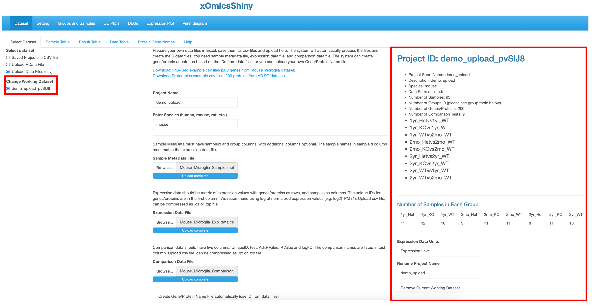
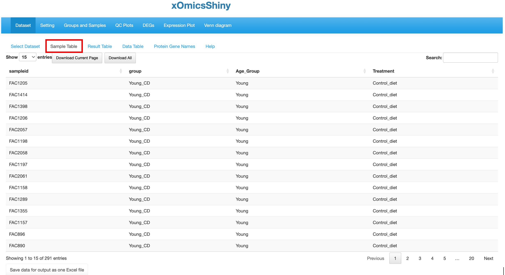

Chapter 3 Dataset Module
3.1 Select Datasets
This first module is for selecting dataset. Users can either select from pre-loaded example datasets or upload their own dataset in a pre-defined format as detailed in section 3.1.2.
3.1.1 Saved Projects in CSV file
We have pre-loaded 11 datasets from published studies that users can use for demonstrative purposes. These includes five studies:
{kind=link}
| Study | DataSets | References | ||
|---|---|---|---|---|
| Cx3cr1-Deficient Mouse Microglia RNA-Seq Demo Data | Mouse Microglia RNA | Gyoneva et al., 2019 | ||
| LRRK2 Human Neuron Transcriptome and Proteome Data | LRRK2 Neuron RNA and Proteome | Connor-Robson et al., 2019 | ||
| Human Brain (Cortex/ACG) Proteome in AD and PD by Maxquant and proteome discoverer | ADPD_cortex_Maxquant, ADPD_ACG_Maxquant,ADPD_cortex_Pdiscover, ADPD_ACG_Pdiscover | |||
| Mouse AgingHFCD RNA, Proteomic and metabolomic Data | AgingHFCD_RNAseq, AgingHFCD_Proteomics, AgingHFCD_Metabolomics | Williams et al., 2022 | ||
| StrokeBrain_TimeCourse Data | StrokeBrain_TimeCourse |
The table needs update to complete the reference information and proper layout
3.1.2 Upload Data Files (csv) and Upload RData File
The xOmicsShiny tool accept two methods of data uploading, which is exactly the same requirement as uploading the data set to our previously developed tool QuickOmics. Please check the section 2.1 and 2.2 of the QuickOmics tutorial.
insert a successfully uploaded data set ScreenShot when update is completed 
{kind=link}
When the dataset is uploaded successfully, an overview is shown of all samples in the project by providing a summary from the metadata. This includes information like which species was used, the different comparisons run and total number of samples in each group. It also helps identify how many groups were present in the dataset, like in this project there are 4 different groups that correspond to two age_groups in each of two treatment groups ( Young, Old; Control_diet, High_fat).
3.1.3 Load and Unload datasets
{kind=link}
Users can load multiple interested datasets. All loaded datasets are listed in the left menu. The selected dataset information is displayed in the right panel of the page. To edit the loaded dataset list, use the Add Another Dataset button in the middle of the page to load more datasets and use the Remove Current Working Dataset button at the bottom of the right panal to remove a dataset.
3.2 Sample Table
A sample table with metadata/details appears upon completion of dataset loading. Here we have selected the “AgingHFCD RNAseq” dataset from the previously published paper (Williams et al., 2022) as an example to illustrate all the functionalities. This publication used multiomics data including RNAseq, Proteomic and Metabolomic data to profile the liver transcriptome, proteome, and metabolome in mouse across age (7 to 24 months) and diet (low or high fat) and link molecular variations to metabolic traits. Using xOmicsShiny, we can visualize the original results from the paper, as well as provide novel visualizations to support new results.
The Sample Table contains detailed info of all study samples. A total of 291 samples that were sequenced in this project are listed in the table with attributes like sampleid, group, Age_Group and Treatment, shown in different columns.
insert a ScreenShot when update is completed 
{kind=link}
3.3 Result Table
This tab contains statistical analysis results like UniqueID (Ensemble ID or Gene Symbol for RNAseq data, Accession ID for proteomics data, KEGG compound ID for metabolomic data), gene name, mRNA or protein abundance (count or intensity), mean and SD values for each group, log2 fold change, P value and adjusted P value for each comparison.
{kind=link}
3.4 Data Table
The Data table contains normalized expression values (TPM for RNAseq, intensity for label free proteomic quantification, or ratio for isobaric label proteomics quantification) per sample for each gene. In Quickomics version 2.0, we added “Download all” button for small tables, and enable “Save to output” button for large tables.
{kind=link}
3.5 Protein Gene Names
This tab contains all quantified gene or protein IDs and gene names. If it is a metabolomic dataset, the table lists the KEGG compounnd IDs.
{kind=link}
{kind=link}